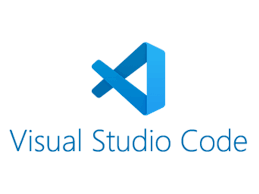
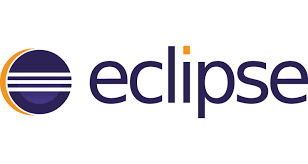
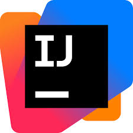
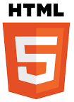
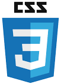

En esta página se verá el contenido base sobre el curso 25-26 de DAW1.
Visual Studio Code

Es un software libre (OpenSource).
Es gratuito y se puede obtener directamente descargando desde internet.
Sistemas operativos con los que es compatible: Windows, macOS y Linux.
VSC soporta una gran cantidad de lenguajes de programación a través de su ecosistema de extensiones,
incluyendo JavaScript, Node.js, Python, Java, C++, HTML, CSS, PHP entre otros.
Incluye funciones como autocompletado inteligente, depuración avanzada, integración con Git para control de código,
terminal integrado, un amplio soporte para extensiones para añadir funcionalidad específica,
y la capacidad de personalización de la interfaz y el aspecto del editor.
También ofrece la posibilidad de integrar herramientas de asistencia por IA
como GitHub Copilot para generación de código y solución de problemas.
Eclipse

El propietario del software es la Fundación Eclipse, una organización sin fines de lucro que fue creada para gestionar la comunidad y el desarrollo del proyecto.
El IDE (Entorno de Desarrollo Integrado) Eclipse se distribuye bajo la Licencia Pública Eclipse (EPL) y es gratuito,
es decir, no tiene coste asociado, ya que es software libre y de código abierto.
Sistemas operativos con los que es compatible: Windows, Linux y macOS.
Eclipse es un IDE (entorno de desarrollo integrado) que aunque se diseñó para Java,
se puede usar para desarrollar en una amplia gama de lenguajes como C/C++,
Python, PHP, JavaScript, Groovy, Ruby, Perl y Scala, entre otros, gracias a su sistema de plugins.
Incluye funciones como autocompletado de código, depuración integrada, refactorización, análisis de código,
un potente editor de texto, integración con control de versiones (Git, SVN), y soporte para múltiples lenguajes a través de plugins (como PyDev para Python),
mejorando la productividad y facilitando la gestión de proyectos en un entorno unificado.
IntelliJ IDEA

El propietario del software es JetBrains, una empresa checa
y una de las principales proveedoras de herramientas para desarrolladores de software.
Se distribuye en dos ediciones principales: la gratuita Community Edition, bajo licencia Apache 2.0, y la de pago Ultimate,
que es comercial con un modelo de suscripción anual o mensual con costes.
Sistemas operativos con los que es compatible: Windows, macOS y Linux.
Puede usarse con Java y Kotlin como lenguajes principales, pero también soporta JavaScript, Python, Scala, Groovy, TypeScript,
y tecnologías de desarrollo web como HTML, CSS, Angular y Vue.js, entre otros,
a menudo a través de complementos o versiones específicas del IDE.
Algunas funciones de ayuda que ofrece entre otras muchas son el autocompletado inteligente, análisis de código,
refactorización, integración con GIT y herramientas para frameworks.
HTML

HTML no es un software, sino un lenguaje de marcado.
No pertenece a una empresa específica, pero está estandarizado y mantenido por
el World Wide Web Consortium (W3C) y WHATWG (Web Hypertext Application Technology Working Group).
No aplica como software, pero HTML es un estándar abierto.
Cualquier persona puede usarlo, estudiarlo y crear contenido con él sin restricciones.
Sistemas operativos con los que es compatible: Windows, macOS, Android, iOS y Linux.
Al ser un lenguaje de marcado se suele usar con CSS, JavaScript, etc.
Coloreado de sintaxis, Autocompletado de etiquetas, Validación de código y Soporte para frameworks y librerías (como Bootstrap o React).
CSS

CSS no es un software, sino un lenguaje de hojas de estilo.
Es un estándar abierto desarrollado y mantenido por el World Wide Web Consortium (W3C).
No aplica como software, pero CSS es un estándar abierto,
accesible a todos sin restricciones, por lo tanto, puede considerarse como "libre" en cuanto a su uso.
Sistemas operativos con los que es compatible: Windows, macOS, Linux, Android, iOS, entre otros.
Al ser un lenguaje de marcado se suele usar con frameworks como React, Angular, JavaScript, etc.
Selectores y pseudoclases para aplicar estilos a elementos específicos, Flexbox y Grid para diseño responsivo y estructuración de páginas,
Variables CSS para reutilizar valores y Animaciones y transiciones.